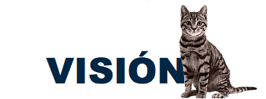
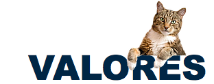

En AVA nos esforzamos día a día para poder llegar a ser líderes en el campo de la medicina veterinaria, brindando siempre a nuestros clientes y pacientes el buen trato y la atención que merecen, manteniendo nuestras instalaciones en las mejores condiciones, anteponiendo siempre la salud de los pequeños integrantes de la familia.
Que está, nuestra primera clínica pueda llegar a ser lo suficientemente autosustentable para poder dar inicio a otras sucursales y así poder abarcar distintas zonas que requieran de un servicio veterinario íntegro y de calidad. Actualizando al personal constantemente, y modernizándonos con nuevas herramientas durante el proceso.
Amoor, Confianza, Puntualidad, Humanismo, Honestidad, Compromiso, Respeto, Empatía.

En Atención Veterinaria Amber nos comprometemos a dar un servicio de calidad, siempre teniendo un trato de calidez y honestidad, buscando la mejor opción para nuestros pacientes en conjunto con las decisiones de sus propietarios para obtener la mejor solución a las necesidades específicas de cada caso, y así se sientan lo mejor posible y se convenzan de los altos estándares en servicios que AVA ofrece para ustedes.
2017 AVA veterinaria
 igital Fanovi
igital Fanovi